まず、今日の結論
AIは「何でも正しい答えを出す魔法」ではなく、文章作成・整理・画像生成・業務補助を一緒に行うアシスタント。 頼み方で答えは変わるし、間違うこともある。だから「AIに下書きを作ってもらい、最後は人間が確認する」が基本です。
① AIの基本 ＋ 生成AI

AIは、人間の知能をまねして「判断・予測・分類・文章作成」などを手伝う技術です。現在よく使われているのは、何でもできるAIというより、特定の作業が得意なAIです。
「AI＝ロボット」じゃないよ。文章を書いたり画像を作ったりするAIもあるんだね！
② LLMはどうやって文章を作る？

LLMは、大量の文章を学習して、文脈から「次に来そうな言葉」を予測しながら文章を作ります。GPTシリーズやGeminiが代表例です。
だから、自然な文章でも間違うことがある。数字や法律など大事な内容は確認が必要だ。
③ Geminiの基本 ＋ プロンプト4つのコツ

検索みたいに単語を並べるより、「何をしてほしいか」を人に頼むように伝えます。最初から完璧な文章を書く必要はありません。
「もっと短く」「やさしい言葉で」って追加で言えばいいよ。最初から100点の指示なんていらない！
④ 実用的な使い方・注意点・これからのAI

注意：AIの回答は鵜呑みにしない。機密情報や個人情報を安易に入れない。完成品ではなく「下書き」として使い、最後は人が確認します。
これからはAIが裏で作業を進める「AIエージェント」も増える。でも重要な操作は人間が確認する考え方が大事だね。
実習① 準備 ＋ コラム作成

GoogleアカウントでGeminiにログイン。テーマを「猫」「ラーメン」「紅葉」などから1つ選び、プロンプトをコピー＆貼り付けします。無料プランでは画像生成回数に上限がある点も覚えておきます。
まずはコピペでいい！「猫について、初心者向けに300字くらいで」と頼んでみよう。
実習② 同じチャットで挿絵を作る

同じチャットのまま「画像を作成」を選び、「このコラムに挿入する挿絵を作成してください」と頼みます。前のコラム内容を踏まえた画像になるか見てみます。
実習③ 同じ文章を別の人向けに書き直す

「コラムの内容を小学生向けに書き直してください」と依頼します。「高齢者向け」「SNS向け」「もっと短く」などへ変えてもOKです。
誰向けかを変えるだけで、言葉づかいや文章の長さが変わる。そこを見比べて。
実習④ 最初と書き直した文章を比べる

ここが一番大事：頼み方を変えるとAIの答えも変わります。結果を見ながら「もっと短く」「やさしい言葉で」と追加でお願いすると、希望に近づけられます。同じチャットを続けると、前の内容を踏まえて対応しやすくなります。
Day1前半の参考動画 5本
AIとは？ 基礎：https://www.youtube.com/watch?v=WJ1R3D0ntf8&list=PLFnwYI-iUeuI生成AIとは？：https://www.youtube.com/watch?v=KUNBWh9rprI&list=PLFnwYI-iUeuI&index=2LLMとは？：https://www.youtube.com/watch?v=YYx0zrIYS2o&list=PLFnwYI-iUeuI&index=3Gemini入門：https://www.youtube.com/watch?v=ckE0WoKYBmc&list=PLFnwYI-iUeuI&index=4Gemini最新機能：https://www.youtube.com/watch?v=bpPNiRsEPOk&list=PLFnwYI-iUeuI&index=5後半の結論：YouTubeは「たくさん出す競争」だけじゃない
今回の3本の動画では、初心者でも 「誰に何を届けるか」「信頼をどう作るか」「次も見てもらうにはどうするか」 を考えて運営することが大切だ、と説明されています。 バズ（一気に再生数が増えること）だけではなく、 リピーター（また見に来る人）や問い合わせにつながる流れを見る、という考え方です。
① 後発・初心者でもチャンスがある、という考え方

1本目の動画では、今のYouTubeは「昔から運営しているチャンネルだから必ず有利」というより、 動画1本ごとの反応も重視されるため、新しい発信者にもチャンスがある、と説明されています。
「今から始めても遅い」って決めつけなくていいんだね。1本ずつちゃんと作れば勝負できる！
ただし「1本目を完璧にするまで出さない」では止まる。設計は丁寧に、公開後は数字を見て改善する。
② 企業YouTubeは「バズ」より「信頼と問い合わせ」

企業や仕事で使うYouTubeは、100万回再生を目標にする必要はありません。 商品やサービスを本当に必要としている人に見てもらい、安心して相談してもらうことが大切です。
「見て終わり」にしないことね。資料、相談、次の動画……次に何をしてほしいかを分かりやすく出す。
再生数だけじゃなく「押された？」「見続けた？」「問い合わせにつながった？」を分けて見ると原因が分かるよ。
③ 再生数だけでなく「また見る人」を増やす

3本目の動画では、単発の大ヒットを追い続けるより、 「次の動画も見る」「過去の動画も見る」人を少しずつ増やす方が、 長く続くチャンネルになると説明されています。
最初から自分語り全開じゃなくてOK！まず「見た人の役に立つ」が入口だよ♪
失敗や迷い、どう直したかも見せると、人間味が出て「また見たい」につながりやすいね。
④ 3本をまとめると「誰に・何を・どう続けるか」

難しく考えなくて大丈夫。 最初にこの4つだけ決めれば、運営がかなり迷いにくくなります。
設計は丁寧に。ただし撮影機材や編集を豪華にしすぎて止まる必要はない。出して、数字を見て、直す。
「100本出さなきゃ！」じゃなくて「次も見たい1本を積み上げる！」って覚えればいいね。
実習① Chromeを開いて、2画面にする

まずChromeブラウザを開きます。新しいタブを作り、タブを右クリックして「新しい分割ビューにタブを追加」を選びます。
ここは準備だけ！難しい作業はまだしないから、順番どおりで大丈夫。
実習② 左にワークフロー、右にGemini

左側に「チャンネルづくりワークフロー」を表示し、右側にGeminiを開きます。 左＝作業の地図、右＝分からないことを聞くAIと考えると分かりやすいです。
片方だけを何度も行ったり来たりするより、2画面で並べた方が迷いにくいね。
実習③ 今日は「作る」より、まず読む・メモする

この段階では、チャンネルを完成させる必要はありません。 ワークフローを飛ばさず順番に読み、「今月はこういう順番で進むんだ」と全体像をつかみます。
チャット履歴をずーっと遡るより、ノートに短く書いとくと次がラクだよ！
実習④ 今日の実習を一言でまとめる

Chromeを2画面に分けて、左に作業手順、右にGeminiを表示し、 まずYouTubeチャンネルづくりの全体の流れを理解する。 これが今日の実習です。
今日は「完成させる日」じゃないの。次から迷わないように地図を見る日。それで十分。
Day2前半の結論：Canvaなら「型を選ぶ → 素材を替える → 音と字幕 → 投稿」でOK
Canvaでは、動画編集をゼロから覚えなくても、テンプレートを使って Instagramリールやショート動画の形を先に作り、写真・動画・文字を差し替えるところから始められます。 さらに、AI音声・自動字幕・静止画の動画化まで同じ画面で進められます。
① Canvaでリール動画を作る全体像
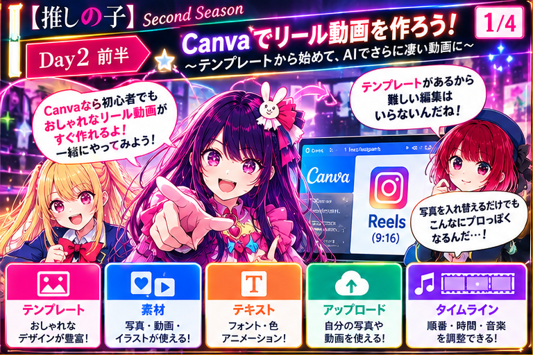
Canvaの動画編集では、まずこの4か所だけ分かれば十分です。 中央＝編集する場所、左＝テンプレートや素材、下＝時間を並べるタイムライン、右上付近＝操作の補助と覚えます。
全部覚えなくていいよ！最初は「どこを触る場所か」だけ分かれば十分！
リールは9:16の縦長。まずテンプレートから始めるのが一番ラクだよ♪
② テンプレートを選んで、写真や動画を差し替える
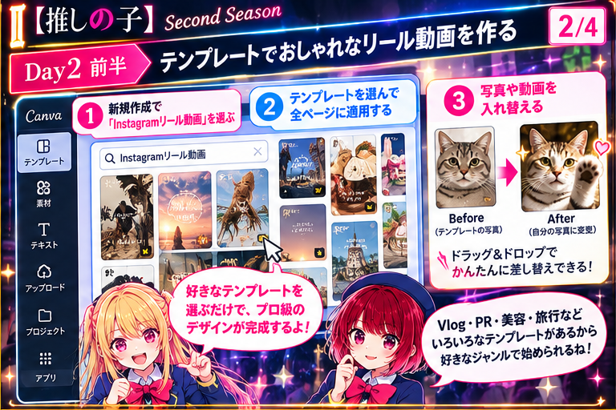
新規作成で「Instagramリール動画」を選び、Vlog・PR・美容など好みのテンプレートを使います。 あとはテンプレート内の写真や動画を、自分の素材へドラッグ＆ドロップで差し替えるだけです。
ゼロからデザインしようとしない。まず良い型を借りて、自分用に直せばいいの。
③ BGM・ナレーション・AI音声・自動字幕
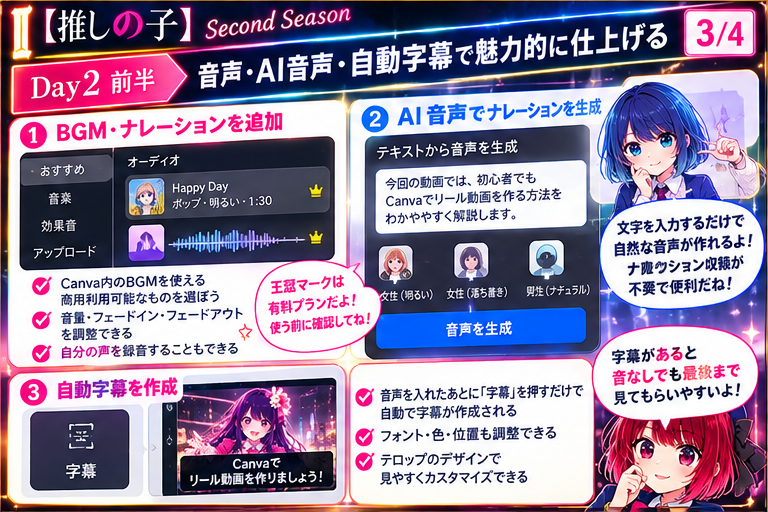
動画にBGMを入れ、音量やフェードイン・フェードアウトを調整できます。 自分の声を録音するほか、文章からAI音声を作ることもできます。 音声を入れた後は「字幕」を使って、自動で字幕を作成できます。
字幕があると、音を出せない場所でも内容を追いやすいね。最後に誤字だけ確認しよう。
④ 1枚の静止画をAIで約5秒の動画にする
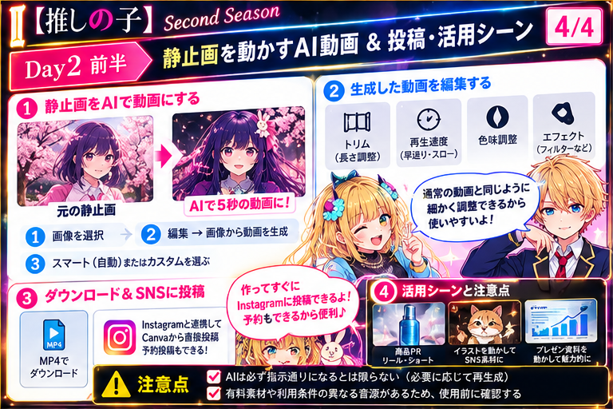
動かしたい写真やイラストを選び、「編集」から「画像から動画を生成」を使います。 自動で動きを付ける方法と、「花びらをゆっくり舞わせる」のように文章で動きを指示する方法があります。
複雑な動きは指示通りにならないこともある。一発で決めず、必要なら再生成すればいい。
商品写真やイラストをちょっと動かすだけでも、リールの素材として使いやすくなるよ！
実習① まず「Instagramリール動画」の型を作る
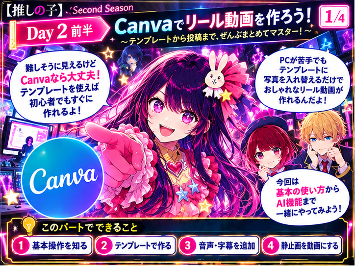
Canvaを開き、「Instagramリール動画」で新規作成します。 今日はオリジナルデザインをゼロから作る日ではありません。テンプレートを選んで土台を作るのが目標です。
まず1本完成させる！細かいこだわりは、作り方が分かってからで大丈夫！
実習② テンプレート・素材・文字・タイムラインを触る
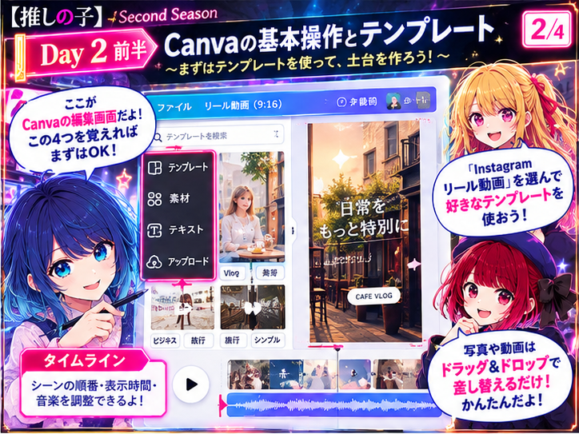
ここでは「きれいに作る」より、どこを触れば何が変わるかを確認することが大切です。
色とフォントを触りすぎると沼るわよ。最初はテンプレートの雰囲気を活かして。
実習③ 音・字幕を付けて「見られる動画」にする
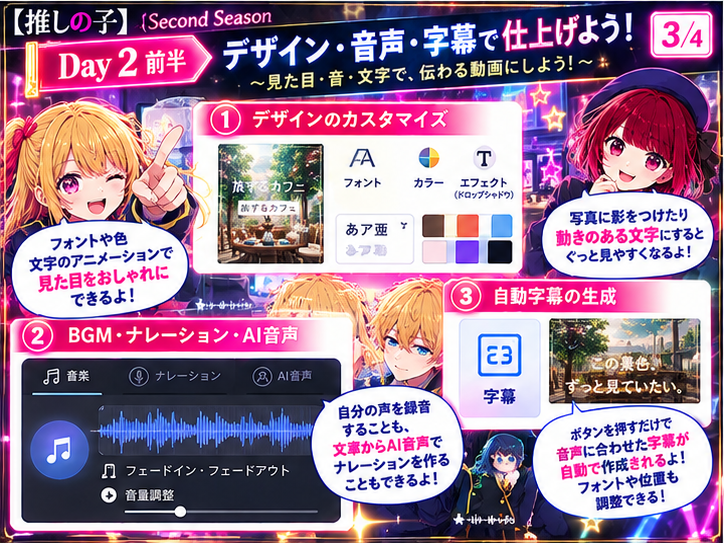
BGMやナレーションを入れ、必要ならAI音声も試します。 最後に自動字幕を作り、文字が読める位置・大きさかを確認します。
字幕は自動でも、最後の確認は人間。名前や固有名詞は特に見直そう。
実習④ 静止画を動かして、MP4書き出し・投稿まで確認
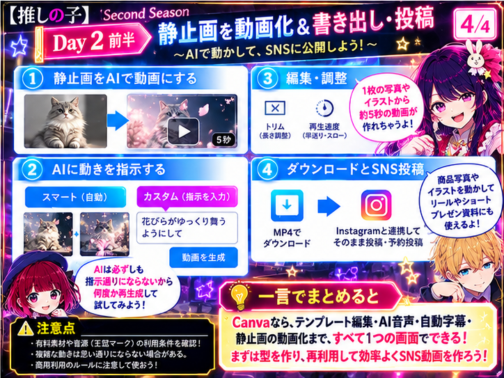
手持ちの写真やイラストを1枚選び、AI動画化を試します。 完成したらMP4で書き出すか、Instagram連携を利用して投稿・予約投稿する流れを確認します。
©️ Canva内でも有料素材や利用条件の異なる素材・音源があります。使用前に確認します。
1本目で「型」を作れたら、2本目からめちゃくちゃラクになるよ♪
Day2後半の結論：「名前を考える」だけで終わらず、実際にチャンネルを開設する
今回は、まず「誰に」「何を届けるチャンネルなのか」を決めます。 それをもとに名前を作り、Geminiにも案を出してもらい、最後はYouTube上で実際にチャンネルを開設します。
① チャンネル名は「第2のサムネイル」
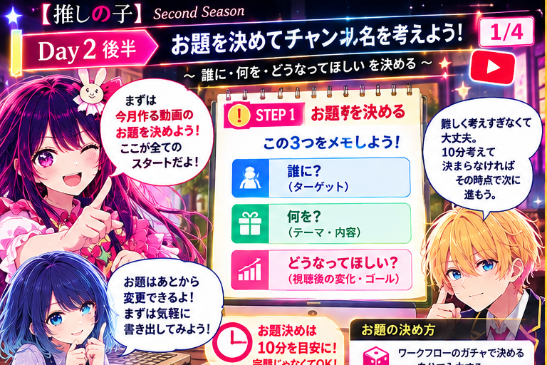
動画では、一般の新しい発信者ほど、意味の分からない一言だけの名前より、 「誰向けで、何を発信しているか」が分かる名前のほうが入口として働きやすい、と説明されています。
名前だけ見て「私向けかも！」って思ってもらえたら、クリックする理由が1個増えるんだね。
ただし検索ワードを並べただけの長い名前は逆効果だ。伝わることと覚えやすさの両方が必要だ。
② 先に「誰に・何を・どうなってほしい」を決める
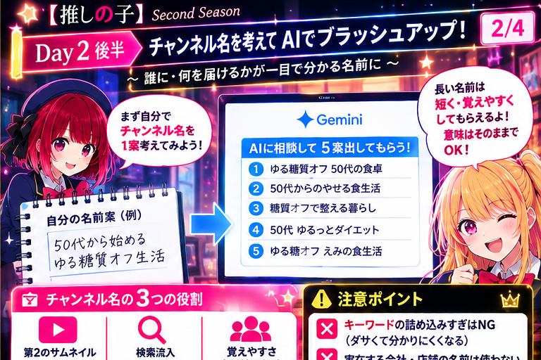
名前を考える前に、ターゲットを決めます。 年齢・性別・悩み・テーマなどを全部盛りにする必要はありません。 まず一人に話しかけるくらい具体的にすると名前を作りやすくなります。
先にターゲットが決まれば、名前・概要欄・動画内容まで同じ方向にそろえやすいね。
検索ワードを全部詰め込んで読みにくくするのはナシ。意味が伝わって、口に出しやすい名前がいいわ。
③ GoogleアカウントからYouTubeチャンネルを作る
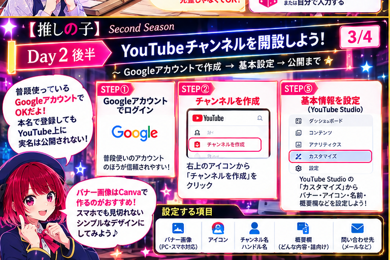
動画では、GoogleアカウントでYouTubeへログインし、右上のアイコンから 「チャンネルを作成」へ進む流れが紹介されています。 作成後はYouTube Studioの「カスタマイズ」で基本情報を整えます。
全部を完璧にするより、まずチャンネルを作って「自分の場所」を用意しちゃおう！
バナーはCanvaのテンプレートを使えばOK。スマホで見切れないように、文字は中央寄りが安全ね。
④ 機能の利用資格と初期設定を確認する
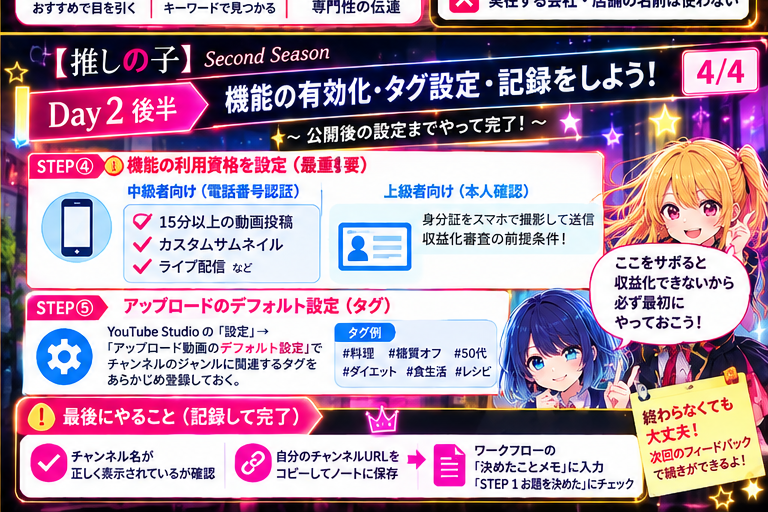
動画では、YouTube Studioから電話番号認証などを行い、 利用できる機能を増やしておく手順が紹介されています。 また、アップロード時の設定やチャンネルのテーマも最初にそろえておきます。
初期設定は後回しにすると忘れる。チャンネルを作った流れで一度まとめて確認しておくといい。
実習① お題を決める — 10分で次へ進む
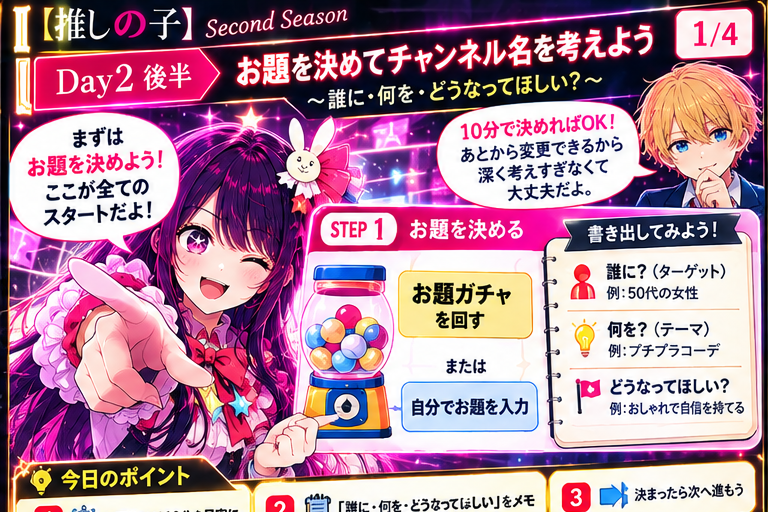
ワークフローのSTEP 1でガチャを回すか、自分でお題を入力します。 決まったらノートに「誰に」「何を」「どうなってほしい」を書きます。
ここで30分も1時間も悩まない！仮決めして進んだ方が、あとで直す材料が増えるよ。
実習② 自分で1案 → Geminiに5案出してもらう
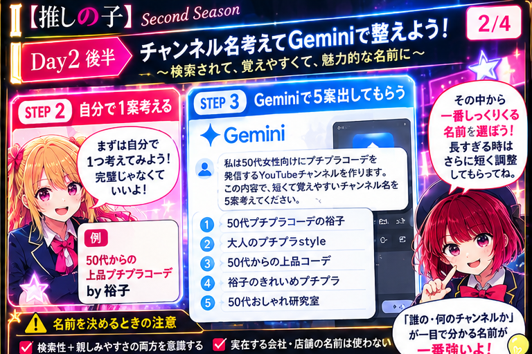
まず自分でチャンネル名を1つ考えます。 次にGeminiへ、自分の案と「誰に」「何を届けるか」を伝え、 短く・覚えやすい名前を5案出してもらいます。
AIに丸投げするんじゃなくて、まず自分の案を1個持っていくのがポイント。方向性が伝わりやすいから。
候補を比べるときは「誰向けか分かる？」「言いやすい？」「覚えやすい？」の3つを見ると選びやすいよ。
実習③ 実習用Googleアカウントでチャンネルを開設する
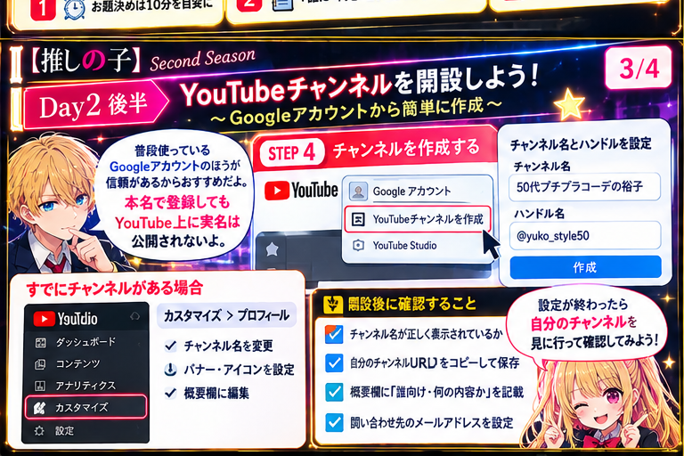
YouTubeへログインし、まだチャンネルがなければ「チャンネルを作成」から 名前とハンドルを設定します。すでにある場合は、そのチャンネルを使うか、 YouTube Studioの「カスタマイズ」→「プロフィール」から名前を変更します。
ここまで来たら「考える授業」じゃなくて、本当に自分のチャンネルができるよ♪
実習④ URLと決めたことを保存して、STEP 1を完了する
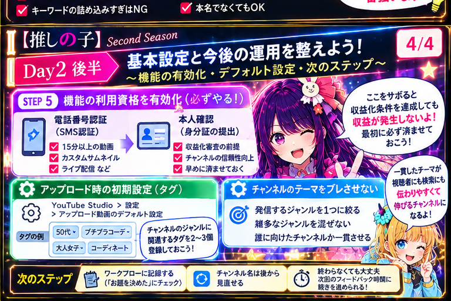
チャンネル名は後から見直せます。 今回すべて終わらなくても、次回のフィードバック時間で続きから進めれば大丈夫です。
「完璧な名前」を決めることより、決めた内容を記録して次の作業へつなげる方が重要だ。
次回は視聴者をもっと詳しく見て、名前も必要なら直せばいい！今日はここまで進めたら大成功！
Day3前半の結論：「誰に見てほしいか」を1人まで具体化する
YouTubeでは「できるだけ多くの人に見てほしい」と広く考えるより、 1人の具体的な視聴者を想定し、その人の悩みを解決する動画として設計するほうが、 内容・タイトル・サムネイルを考えやすくなります。
① 「みんなに届けたい」をやめて、たった1人を決める
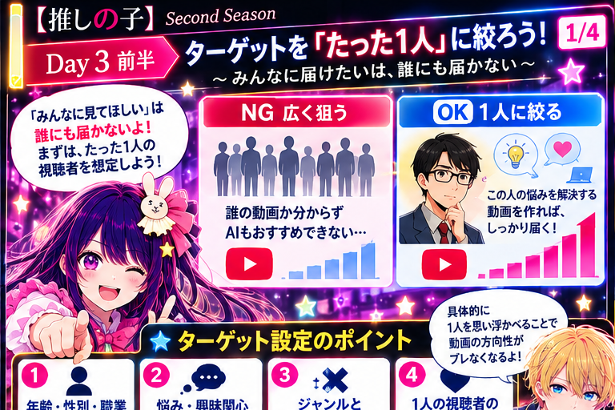
ターゲットが広すぎると「誰のための動画なのか」がぼやけます。 年齢・性別・職業・悩みなどを具体化し、 画面の向こうにいる1人へ話すつもりで考えます。
「誰でもどうぞ！」じゃなくて、「この人に届ける！」って決めるんだね。
1人を決めると、何を話すか、どんな言葉を使うかまで判断しやすくなる。
② 同じジャンルでも「興味」と「悩みの深さ」が違う
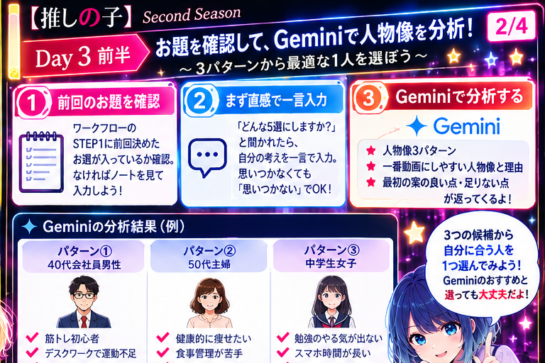
同じダイエットでも「食事で痩せたい」「歩いて痩せたい」「筋トレで痩せたい」では、 見たい内容が違います。こうした興味関心のまとまりをクラスターとして考えます。
さらに、同じクラスターでも「これから始める人」「経験者」「やっているのにうまくいかない人」では、 刺さる内容が変わります。これが悩みの深さです。
「筋トレが好きな人」だけじゃ足りないんだね。「始めたいのか、困っているのか」まで見る。
目先の再生数だけで、全然違う人を集める動画に飛びつかないのも大事だよ！
③ ペルソナは「年齢と名前」だけじゃない
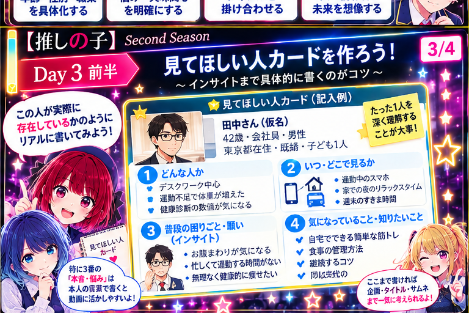
「35歳・会社員・趣味は映画」のようなプロフィールだけでは、 どんな動画を作ればいいか判断しにくいままです。 実際に使える人物像にするには、その人の本音や行動理由＝インサイトまで考えます。
プロフィールを飾るんじゃなくて、「この人は何に困って、何を知りたいの？」まで書くのよ。
④ 作った人物像は、動画企画の「判定基準」にする
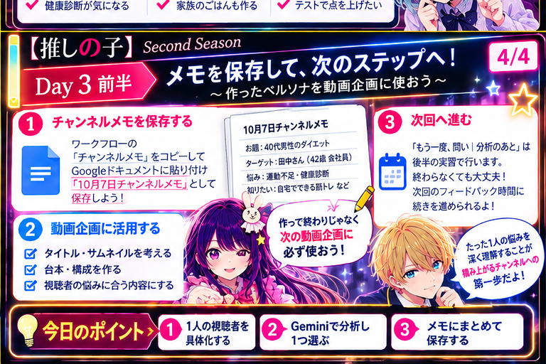
人物像は作って終わりではありません。 タイトル・サムネイル・企画を考えるたびに、 「この人なら、本当に見たいと思うか？」と照らし合わせて使います。
狙う相手と企画がズレたら、いくら見栄えを整えても意味が薄い。人物像を判断軸に使う。
実習① 前回のお題を確認して、まず直感で一言答える
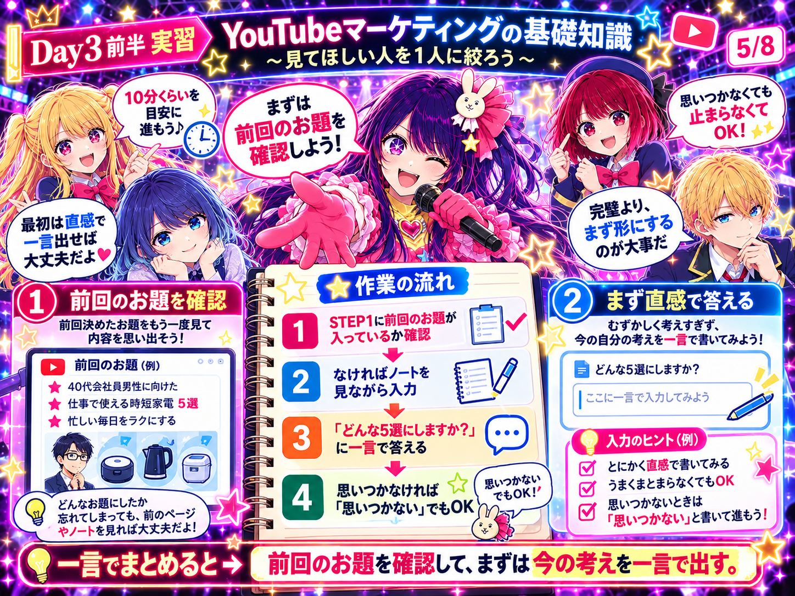
ワークフローのSTEP1に前回決めたお題が入っているか確認します。 なければノートを見ながら入力します。 次に「どんな5選にしますか？」という問いへ、まず今の考えを一言で入れます。
ここは正解を出すところじゃないよ！まず今の考えを出して、あとで比べよう。
実習② Geminiで「人物像3パターン」を分析する
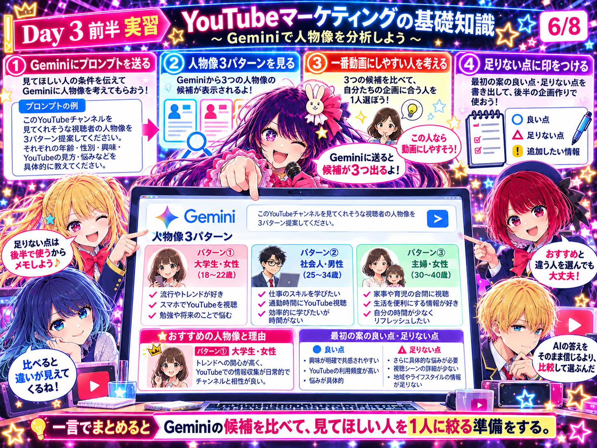
ワークフローが作ったプロンプトをGeminiへ送ります。 Geminiから人物像3パターン／一番動画にしやすい人物像と理由／最初の案の良い点・足りない点を出してもらいます。
Geminiのおすすめと違う人を選んでも大丈夫。AIは候補を整理する役。最後に決めるのは自分だよ。
実習③ 「見てほしい人カード」を4項目で完成させる
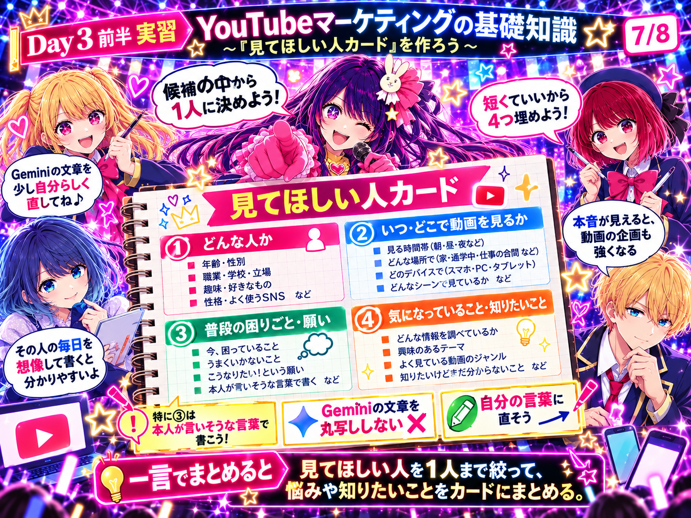
特に③は重要です。Geminiの文章をそのまま写すのではなく、 その本人が実際に口にしそうな言葉へ自分で直します。
「運動不足を解消したい」より、「仕事から帰ると疲れて運動する気が起きない」みたいな言葉の方がリアルよ。
カードは長文じゃなくてOK！あとで動画を考えるときに思い出せる短さがいいよ♪
実習④ チャンネルメモを保存して、後半へつなげる
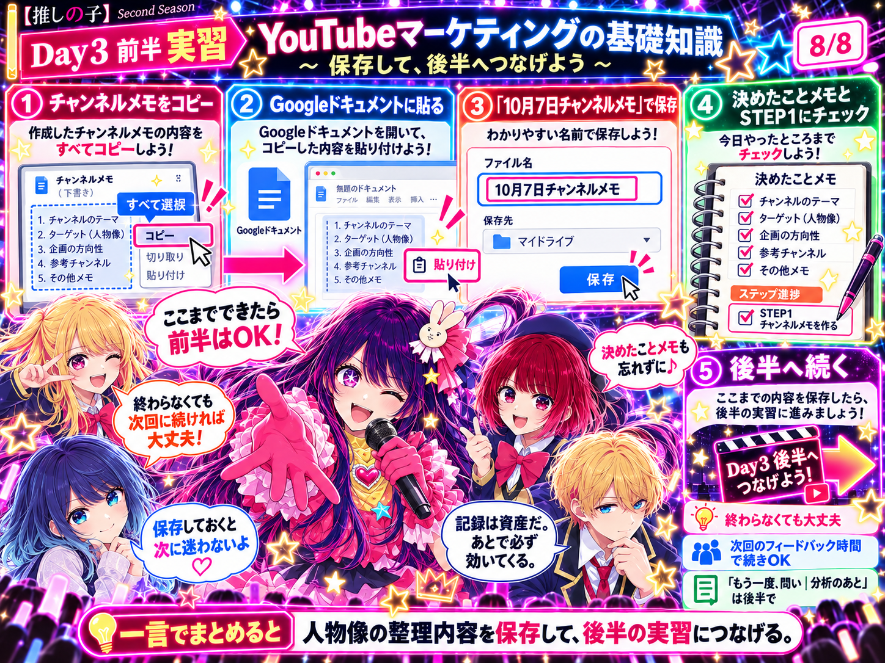
ワークフローの「チャンネルメモ」をまとめてコピーし、Googleドキュメントへ貼り付けます。 ファイル名は「10月7日チャンネルメモ」として保存します。
人物像は資料ではなく、次の企画に使う設計図だ。保存しておけば、後半で迷わず続けられる。
Day3後半の結論：5W2Hで「誰に・何を・どう届けるか」を1行にまとめる
YouTubeは、思いつきで動画を出し続けるより、チャンネルの軸を先に決めたほうがブレにくくなります。 ここでいうコンセプトは「何をやるか」だけでなく、何をやらないかも決める判断基準です。 最後は「誰に、どんな悩みを、どんな強みで、どう解決するチャンネルか」を1行のログラインにまとめます。
① コンセプトは「何をやるか」より「何をやらないか」を決めるもの
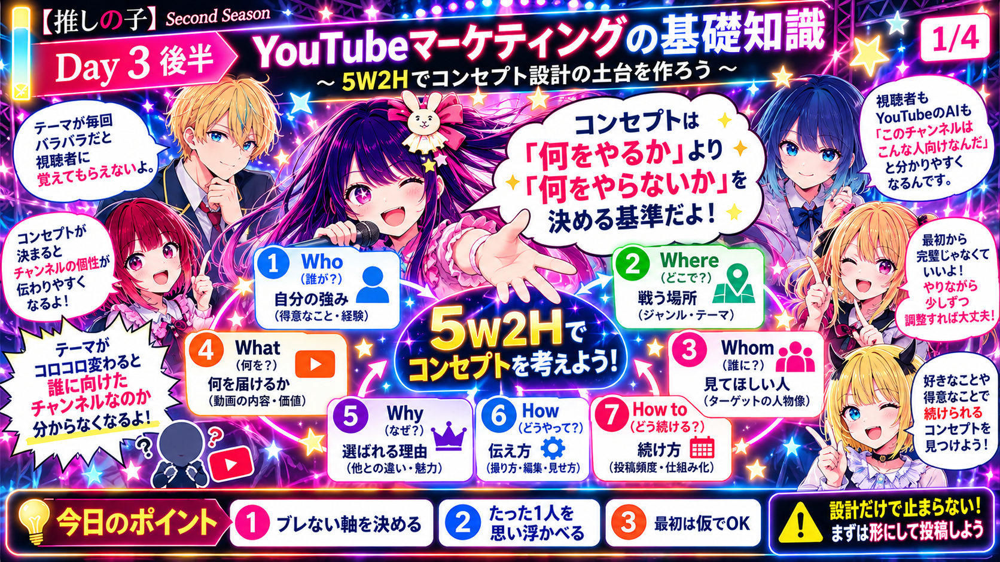
テーマが毎回コロコロ変わると、視聴者にもYouTubeにも「このチャンネルは何者か」が伝わりません。 だから最初に、5W2Hでブレない軸を作ります。
自分の強み・経験
戦う場所・ジャンル
見てほしい人
何を届けるか
選ばれる理由
伝え方・世界観
続け方・運営方法
「これもやりたい、あれもやりたい」をそのまま出すんじゃなくて、まず軸を決めるんだね！
最初から完璧でなくていい。仮でも形にして、あとで修正できる状態にする方が重要だ。
② まずは Who・Where・Whom を具体化する
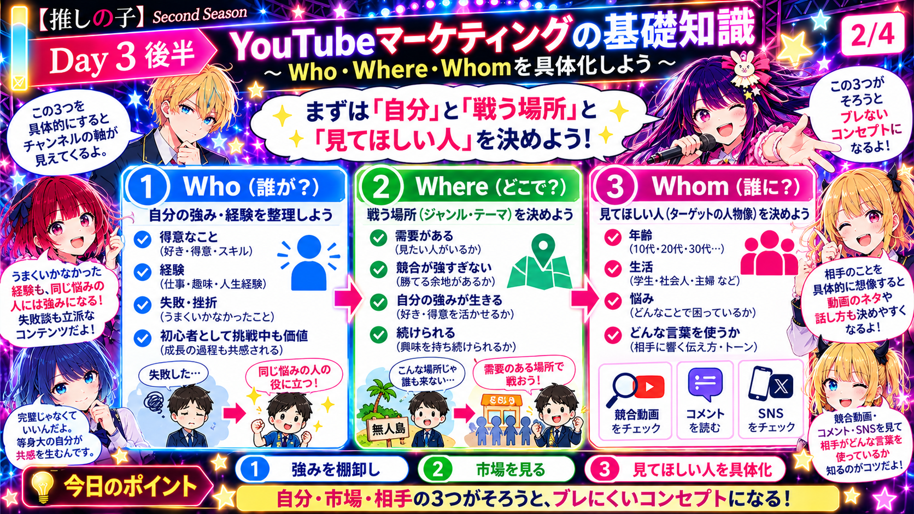
最初に固めるのは、自分・戦う場所・見てほしい相手の3つです。 ここが曖昧だと、チャンネル全体の方向がぼやけます。
「ダイエットしたい人」だけじゃ広すぎるよ。どんな生活の人で、どんな悩みなのかまで掘るのがポイント。
うまくいかなかった経験も立派なネタ！同じところで悩んでる人には、むしろ共感になるよ♪
③ What・Why・How を整えて「このチャンネルを選ぶ理由」を作る
次に決めるのは、何を届けるか（What）、なぜ自分なのか（Why）、どう伝えるか（How）です。 ここが決まると、名前・説明文・動画企画がつながります。
タイトルや説明文は、オシャレさより「何が見られるか」が先。伝わらなきゃ意味ないのよ。
④ How to（続け方）を決めて、最後は1行のログラインにする
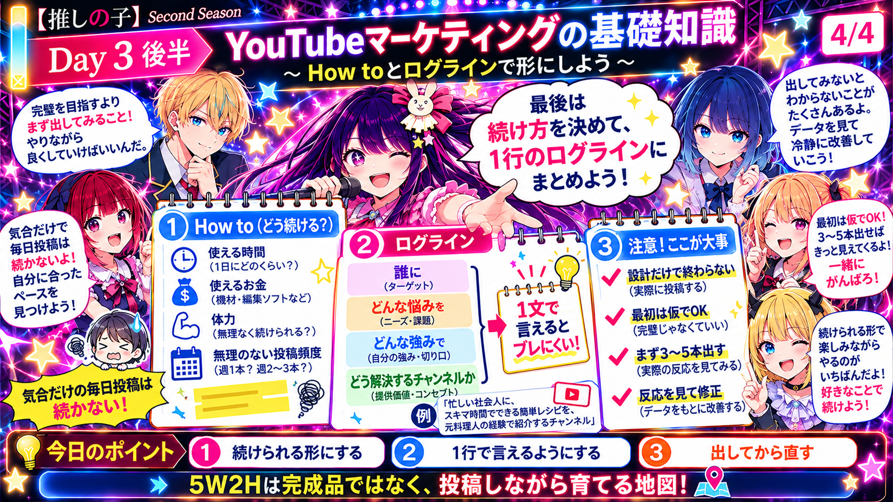
投稿は、気合だけで毎日やるより、続けられる形を先に決めた方が長続きします。 時間・お金・体力を考え、無理のない頻度にします。
5W2Hは完成品ではありません。まず3〜5本出して、反応を見ながら育てる地図だと考えましょう。
設計だけで満足するな。仮でも投稿し、数字と反応で修正していく方が現実的だ。
Day3後半・5W2Hコンセプト設計の参考動画
コンセプト設計の7ステップ（5W2H）実習① 分析前と分析後を比べて、方向性のズレを確認する
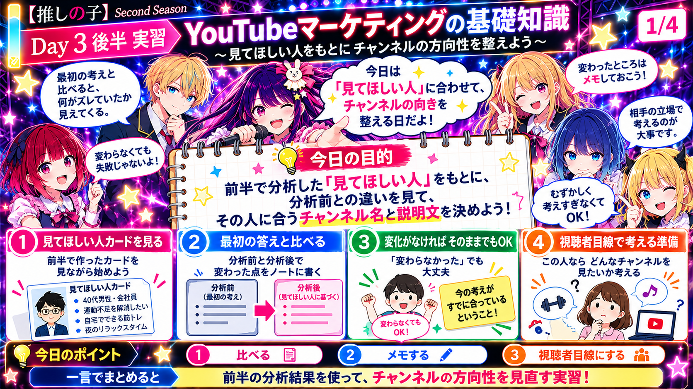
前半で作った「見てほしい人カード」を見ながら、最初の考えと今の考えを比べます。 変わったところがあればノートへ書き、変わらなければ「変わらなかった」でOKです。
「考えが変わった＝失敗」じゃないよ！分析したから見え方が変わったってことだもん。
実習② 視聴者目線の一言を作り、Geminiで名前案と説明文案を広げる
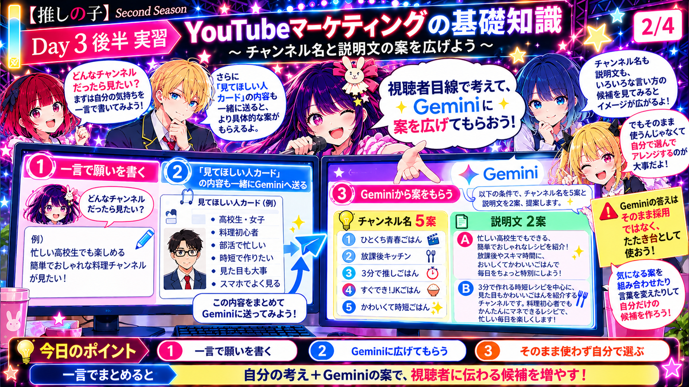
まず「どんなチャンネルだったら見たいか」を自分の言葉で一言書きます。 次に、その内容と「見てほしい人カード」をGeminiへ送り、チャンネル名5案・説明文2案を出してもらいます。
Geminiに送る材料が具体的なほど、返ってくる案も具体的になるよ。
実習③ 前回の名前と案を比べて、一番伝わる名前と説明文を選ぶ
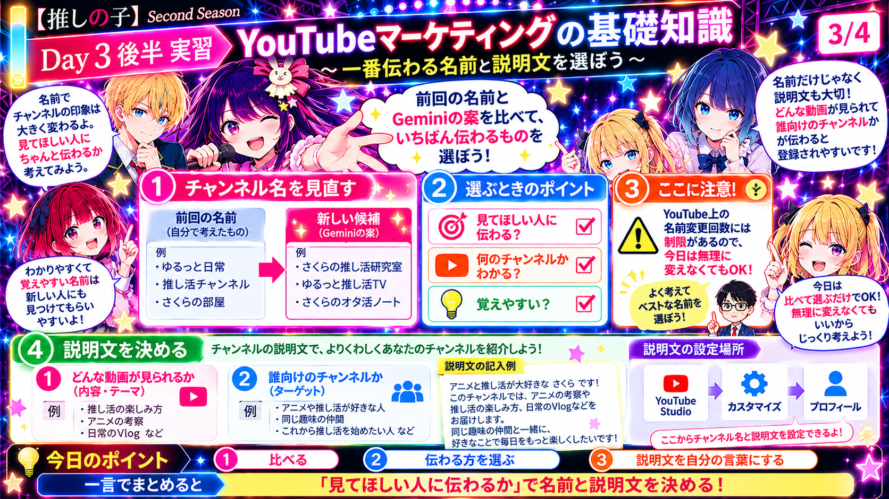
前回の名前とGeminiの案を見比べ、見てほしい人に一番伝わるものを選びます。 説明文には「どんな動画が見られるか」「誰に向けたチャンネルか」の2点を入れます。
おしゃれなだけの名前より、「誰向けか」が見える名前の方が強いわ。
実習④ YouTube Studioへ反映し、チャンネルメモを更新して次へつなげる
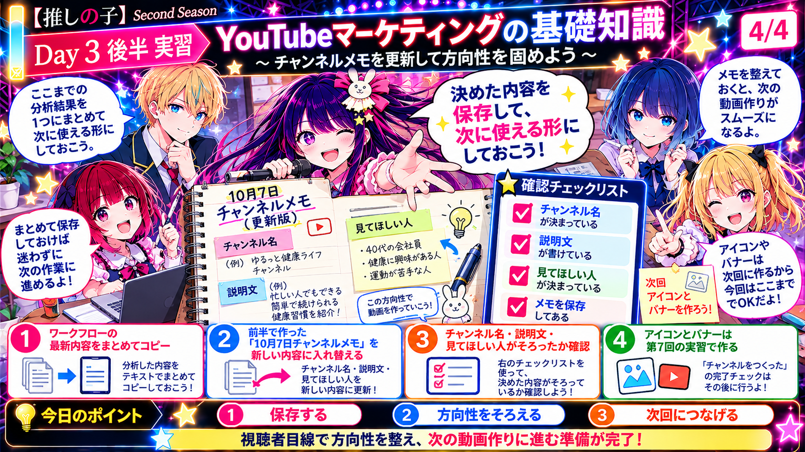
YouTube Studioの「カスタマイズ」→「プロフィール」から説明文を入力し、 ワークフローの最新内容をまとめてコピーして、前半で作った「10月7日チャンネルメモ」を新しい内容へ更新します。
全部を今日100点にしなくていいよ！次に使える形で残しておくのがいちばん大事♪